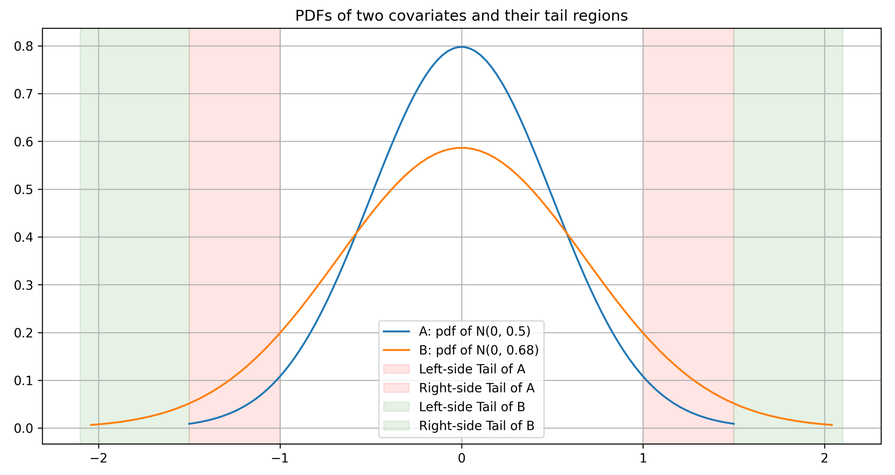

Causal Inference: Assessing Overlap in Covariate Distributions
This one summarizes what I’ve captured from Chapter 14 of “Causal Inference for Statistics, Social, and Biomedical Sciences: An Introduction” book by Guido W. Imbens and Donald B. Rubin.
Few shortcuts I’ve used:
- T - shortcut for treatment group
- C - shortcut for control group
Covered sections and their summary:
- 14.1 Introduces why adjusting for differences in the covariate distributions is needed
- 14.2 Goes over a case with two univariate distributions
- 14.3 Goes over a case with two multivariate distributions
- 14.4 Explains the role of propensity of scores in assessing the overlap of covariate distributions
- 14.5 Provides a measure to assess if each treatment/control unit has an identical non-treated/treated twin
- 14.6 Provides examples (skipped)
1. Why do we need to adjust for differences in the covariate distributions?
If there is a region in the covariate space where T has relatively few units/samples or C has relatively few units/samples, our inferences in that region will largely depend on extrapolation, thus will be less credible compared to inferences of regions where both T and C have substantial overlap in the covariates distribution.
Example:
Covariate space #1:
- T has 5 males with age<=18
- C has 55 males with age<=18.
Covariate space #2:
- T has 55 males age>18 and age<=30
- C has 60 males age>18 and age<=30
In the above example, our inferences for the covariate space #2 will be more credible than our inferences for the covariate space #1.
To note, even in cases when there is there is no confounding (unconfoundedness), this is still a fundamental issue. However, if we have a completely randomized experiment, we can expect the distribution of covariates to be similar per definition, and thus, less risks of stumbling upon this issue.
2. Assessing overlap of univariate distributions
1. Comparing differences in location of two distributions
Given two univariate probability distributions f_c(x) and f_t(x) with means \mu_c and \mu_t, and variances \sigma_c^2 and \sigma_t^2, we can estimate the differences in locations of the two distributions with:
\Delta(ct) = (\mu_t - \mu_c) \big/ \sqrt{(\sigma_t^2 + \sigma_c^2)/2}
, which is a normalized measure of difference of two distributions. To note, this is different from the t-statistic that tests whether the data contain sufficient info to support the hypothesis that two covariate means in T and C are different:
T(ct) = (\mu_t - \mu_c) \big/ \left( \sqrt{\sigma_c^2/N_c + \sigma_t^2/N_t} \right)
To our purposes, we don’t care about testing if we have enough data to check if means are different between T&C. Instead, we care about understanding if the differences between the distributions are so large that we need to fix the issue, and at the same time, check what kind of adjustment methods are required for the problem at hand.
2. Comparing measures of dispersion of two distributions
The log difference in the standard deviations helps to understand the difference in dispersion:
\Gamma(ct) = \ln(\sigma_t/\sigma_c) = \ln(\sigma_t) - \ln(\sigma_c)
, we take the log because its more normally distributed compared to simple difference or ratio of standard deviations.
3. Comparing the tail overlaps of two distributions
To understand the overlap of covariate distributions in the tail regions, we can calculate the fraction of treatment units that exist in the tails of the distribution of covariate values in the control.
One method is to choose an arbitrary tail boundary, e.g. \alpha = 0.05 and calculate the probability mass of T’s covariate distribution outside the \alpha/2 and 1 - \alpha/2 quantiles of the C’s covariate distribution:
\pi_t^{\alpha} = F_t\!\big(F_c^{-1}(\alpha/2)\big) + \Big(1 - F_t\!\big(F_c^{-1}(1 - \alpha/2)\big)\Big)
, where F_t and F_c represent the CDFs of the T and C covariates’ distributions (so F_c^{-1} is the quantile function of the control distribution). We can do the same for C, where we calculate the probability mass of C’s covariate distribution outside the \alpha/2 and 1 - \alpha/2 quantiles of the T’s covariate distribution:
\pi_c^{\alpha} = F_c\!\big(F_t^{-1}(\alpha/2)\big) + \Big(1 - F_c\!\big(F_t^{-1}(1 - \alpha/2)\big)\Big)
The intuition here is that it is relatively easy to impute outcomes values of either T or C units in the dense regions of the distribution (e.g. near the mean of a normal distribution where majority of samples are concentrated), while it is harder at the tail regions where only few units exist. One can refer to the following two distributions as an example of two differently dispersed covariates’ distributions:

Last but not least, here’s how to interpret the values:
- \pi_c^{\alpha} = \pi_t^{\alpha} = \alpha happens for a completely randomized experiment, where only \alpha \times 100\% of units have covariate values that make us cry (i.e. difficult to impute the missing potential outcomes of a group).
- if \pi_t^{\alpha} > \alpha, it will be relatively difficult to impute/predict the missing potential outcomes for the control units (more treatment units exist in the tail region of the control group’s covariate distribution).
- if \pi_c^{\alpha} > \alpha, it will be relatively difficult to impute/predict the missing potential outcomes for the treatment units (more control units exist in the tail region of the treatment group’s covariate distribution).
3. Assessing overlap of multivariate distributions
Given K covariates, we could compare the distributions of T & C iteratively one-by-one using the above approach. A good way is to start with the covariates for which you have a priori belief that it is highly associated with the outcome (i.e. ensuring the importatnt covariates are okay).
Using Mahalanobis distance to compare differences of multivariate distributions
In addition to above metrics that can be used for univariate distributions, there is a neat multivariate summary measure that captures the difference in locations between two distributions similar to the one mentioned in the first part of section 2. It leverages the Mahalanobis distance and takes as input the 2 by K-dimensional vector of distribution means of each covariate \mu_c and \mu_t:
\Delta_{ct}^{\text{multi}} = \sqrt{(\mu_t - \mu_c)^{\top} \, \big((\Sigma_c + \Sigma_t)/2\big)^{-1} \, (\mu_t - \mu_c)}
, where
\Sigma_c = \frac{1}{N_c - 1} \sum_{i:W_i=0} (X_i - \bar{\mu}_c)(X_i - \bar{\mu}_c)^{\top} \quad\text{and}\quad \Sigma_t = \frac{1}{N_t - 1} \sum_{i:W_i=1} (X_i - \bar{\mu}_t)(X_i - \bar{\mu}_t)^{\top}
are the covariance matrices of distribution means for C & T, respectively. Intuitively, a larger Mahalanobis distance tells us that the distributions are further apart in multivariate space, considering both location and spread.
Using propensity scores to compare distributions
We can use propensity scores to assess the balance of covariate distributions is that any difference in covariate distributions also shows up in the difference of propensity score distributions. In principle, difference in covariate distributions leads to difference in the expected propensity scores of T&C, i.e. the average propensity scores. So if there’s a non-zero difference in the propensity score distributions for T&C, it also implies there is a difference in the covariate distributions for T&C.
Since it is much less work to analyze the differences of univariate distributions compared to multivariate ones, leveraging propensity scores and their distributions which is a univariate distribution to analyze the differences makes things a bit simpler.
How does it work? Consider t(x) to be the true propensity score (assuming we know the treatment assignment mechanism) and l(x) to be the linearized propensity score (log odds ratio) of being in T vs C given covariates x:
l(x) = \ln\!\left(\frac{t(x)}{1 - t(x)}\right)
Then, we can simply look at the normalized difference in means for the propensity scores of each treatment, where:
\bar{l}_c = \frac{1}{N_c} \sum_{i:W_i=0} l(X_i) \quad\text{and}\quad \bar{l}_t = \frac{1}{N_t} \sum_{i:W_i=1} l(X_i)
are the average values for propensity scores of C & T units, and:
s_{l,c}^2 = \frac{1}{N_c - 1} \sum_{i:W_i=0} \big(l(X_i) - \bar{l}_c\big)^2 \quad\text{and}\quad s_{l,t}^2 = \frac{1}{N_t - 1} \sum_{i:W_i=1} \big(l(X_i) - \bar{l}_t\big)^2
are the variances of the propensity score, which leads us to the estimated difference in average propensity scores scaled by the square root of the average square within-treatment-group standard deviations:
\hat{\Delta}_{ct}^{l} = (\bar{l}_t - \bar{l}_c) \big/ \sqrt{(s_{l,c}^2 + s_{l,t}^2)/2}
To note, if we are using linearized propensity scores, the propensity score function is scale-invariant, so there is not actually a need to normalize the above by the standard deviations.
Moreover, compared to how we assessed the univariate covariate distributions, there are some points to be aware of:
- Differences in the covariate distributions are implied by the variation in the propensity scores.
- If the treatment assignment mechanism is biased some way then it is possible that the covariate distributions are similar, but we observe a difference in the propensity score distributions.
- On another hand, the treatment assignment mechanism might not be biased, and the covariate distributions do indeed differ (implied by the difference in propensity score distributions).
- If the covariate distributions of two treatments differ, then it must be that the expected value of the propensity score in T is larger than the expected value of the propensity score in the C (or vice-versa).
As a result, we can understand that differences in covariate distributions in T vs C imply, and are implied by, the differences in the average value of the propensity scores of T & C. Proof is captured in the book Chapter 14.4.
4. Estimating if T/C units have comparable twins in C/T
Consider a unit i with treatment W_i. For this unit i we can determine if there is a comparable twin with treatment \hat{W}_i = 1 - W_i such that the difference in propensity scores l(X_i) - l(\bar{X}_i) is less than or equal to l_u, where l_u is an upper threshold implying the difference in propensity scores is less than 10%.
Intuitively, if there is a similar unit with opposite treatment and a similar propensity score, we may be able to obtain trustworthy estimates of causal effects without any extrapolation or additional work. However, if there are many such units without twins, it will be difficult to obtain credible estimates of causal effects, no matter what methods we use. A common method to solve this, given we have enough samples, is to trim the units without twins.
We can estimate the degree of units with close comparison units by defining an indicator variable \varsigma_i that flags whether unit i has a comparable twin:
\varsigma_i = \begin{cases} 1 & \text{if a comparable twin exists for unit } i,\\ 0 & \text{otherwise.} \end{cases}
, then for each T & C we can define two overlap measures implying the proportion of units with close comparisons:
q_c = \frac{1}{N_c} \sum_{i:W_i=0} \varsigma_i \quad\text{and}\quad q_t = \frac{1}{N_t} \sum_{i:W_i=1} \varsigma_i